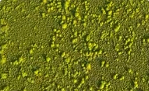
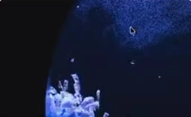
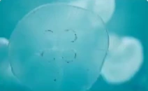

Design 6 min read
Remote UX work fails in a predictable way. Not because people can’t use the tools, but because the casual moments that used to carry design thinking — the over-the-shoulder glance, the hallway “does this make sense?” — disappear.
Remote UX work fails in a predictable way. Not because people can’t use the tools, but because the casual moments that used to carry design thinking — the over-the-shoulder glance, the hallway “does this make sense?” — disappear.



Try a different word or explore all stories.